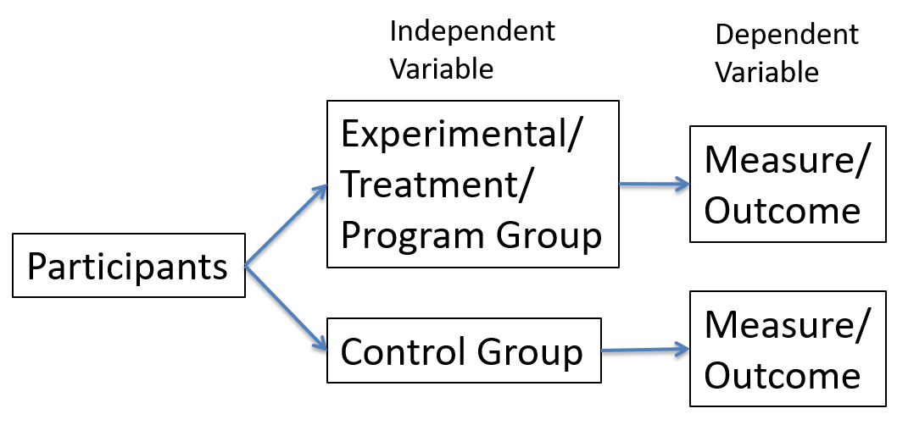
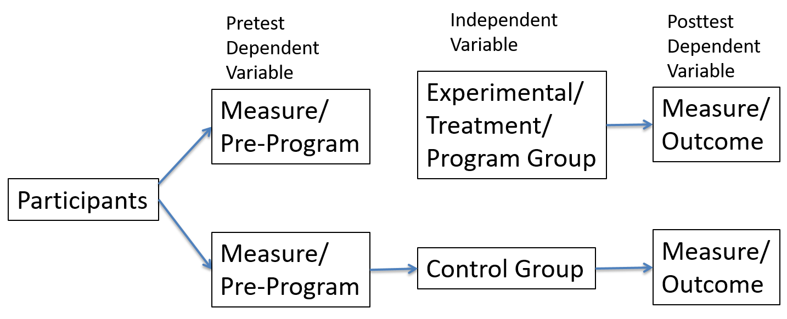

Chapter 15 Introduction To Experimental Methods
In the last few units we covered various non-experimental methods. These methods involved either observing behaviors, interactions, and the functioning of organizations or directly asking people questions in organizations. These can be very useful tools in evaluation.
15.1 Experimental Methods Vs. Non-Experimental Methods
Non-experimental methods have some limitations as we discussed previously. A key limitation is that there are many variables and factors that are unobservable and difficult to measure. When you can observe the variables there is often an interpretation that is needed. One other limitation that is not as much of a problem in experimental methods, is the amount of control that the researcher has over the research and evaluation in non-experimental methods.
15.1.1 What Makes An Experiment?
What makes an experiment a true experiment. There are several things that are important. There is one very important aspect that is necessary for a research study or evaluation to be an experiment. In an experiment the researcher manipulates the independent variable. By manipulation it means that the researcher assigns the condition of the independent variable in which each person or participant will be or experience in the experiment.
Let us again return to the example of pay raise and productivity. We discussed how we could simply obtain the pay and any amount of raise for each member of the organization. In this case the researcher is simply using pay data that exists with no influence by the researcher. In and experiment the researcher would manipulate or assign the pay raise or no pay raise to each person. This is one way that the researcher has more control in an experiment than in non-experimental methods.
Related to the assignment or manipulation of the independent variable is the experimental or treatment group. If a researcher is interested in the affect of things, such as pay raise, class size, increased taxes, etc. then the people that experience changes in these or a specific level of these would be in the experimental/treatment group. These are specific levels of the independent variable that are assigned to each person by the researcher. The researcher may assign half of the people to receive a pay raise, or smaller class sizes, or higher taxes. These are experimental groups. One ethical caution is that it may not be ethical to experiment by changing class sizes or increasing taxes due to the potential harm that people could experience.
Another important aspect of a good experiment is that it has a control. Control is a word that you will hear used in slightly different ways in research design and statistics/regression. For example we just discussed that in an experiment the researcher has more control. This means that there are not as many unobservable variables or aspects of the study that are outside of the control of the researcher. In the case of an experiment it has a very specific meaning. It is a group that does not experience the treatment and are not in the experimental group. Basically, the control group does not experience any change. These would be people that did not receive a pay raise or did not experience a program in an organization.
What is the purpose of a control group and why is it important? We may wonder why not simply use an experimental or treatment group. For example, we may only be interested investigating if pay raises increase productivity. A researcher increases pay and observe an increase in productivity. It seems that it does have the desired effect. If you recall when discussing pay raise in earlier units, there could have been some other alternative explanation. Therefore, we could not be 100% confident that pay raise was the cause. It may have been motivation, it may have been employee morale, it may have been, changes in management, or it could be one of many possible factors that resulted in increased productivity.
The control group is one way that helps to show that the experimental treatment had an an actual effect in the outcome of a program. The control group allows for a comparison of the experimental group that actually experienced the treatment with the control group that did not. One other thing to note is that because there are many reasons that you could see an effect from the treatment, such as increased productivity when pay increases. It is possible for many reasons that productivity increased. By comparing the productivity levels of the experimental/treatment group with the control group you can see if there was actually a difference.
There are several possibilities if people with a pay raise became more productive. First, the experimental/treatment group that received the pay raise had increased productivity and the control group did not. This would indicate an effect and pay is related to productivity. Second, it is possible that the experimental/treatment group became more productive, but the control group had the same amount of increase in productivity. This would indicate that potentially something other than pay caused the productivity increase. Finally, it is possible that the experimental/treatment group increased productivity, but the control group also increased. However, the experimental/treatment group increase at a higher rate. This would indicate that pay had an effect, but there may also be other factors. This is a topic we will discuss in details called counterfacutals.
So far we have discussed some key factors that every experiment should have. The researcher manipulates the independent variable, which determines which participants will receive the level of the independent variable. Next, we discussed the control group and how it is needed to have confidence that the treatment or program accounts for the change in the dependent variable or the outcome. However, there is one important factor that is needed to have confidence in being able to infer causality between the independent variable/input and the dependent variable/outcome.
Recall that if a researcher simply assigned a pay raise to the first half of people that showed up to the organization one day and did not for the second people that arrived there could be other factors involved. We also discussed that perhaps people that get to work first have more motivation, which could account for the productivity. Let us assume that the motivation difference is true. The underlying problem here is that the two groups were different on other factors. What this means is if we are looking at only the independent variable of pay everything else should be the same between groups. When they are not the same, it means that the treatment group with higher pay also has higher motivation and the control group has lower pay and also lower motivation. If they are different on two variables at the same time there is no way to tell which factor or variable accounts for the productivity change.
There is one very simple solution that is very common in research. This is the method of randomly assigning participants in the research or evaluation to one of the two groups: the control group or the experimental group. How would this work? In an experiment the goal is to have only one thing that is different between the two groups and that is the level of the independent variable or treatment/program. If everything else is the same and there is an effect in the outcome then the only thing that can account for this is the treatment or program. This is because everyone is exactly the same except for the treatment.
Randomization is a great method to create equal groups. However, it is important to note that the groups are equal on average. There is not a significant difference between the groups and therefore they are statistically the same. Once this is achieved the researcher can infer that there was a causal relationship between the program (pay raise) and the outcome (productivity). There are two points of caution. It is possible that the randomization failed for some reason. You could flip a coin 100 times and get 90 heads. That is not what is expected, but could happen. This is the reason that you want to record any other important variables and compare the two groups to be sure that there is no statistical difference. The other reason is that there may be omitted variables that were not measured. As we discussed in the previous course omitted variables can change the results. Randomization may not be perfect, but if done correctly will let the researcher be confident in the results.
15.2 Looking Ahead
We have covered the general principles and components of simple experiments. These principles and components are very important for all experiments. Sometimes there are limitations with some of these, but there are methods to mitigate some of the effects of the limitations. The key components are the manipulation of the independent variable by the researcher, the control group, and the random assignment of the independent variable.
We will begin to discuss the specific details of different types of experiments.
We will discuss the advantages and disadvantages of different types of experiments.
We will discuss the details of how to properly conduct an experiment.
15.3 Types Of Experimental Design
In the last unity we introduced some very important aspects of experimental design: the experimental/treatment group, the control group, and randomization. We also discussed how the control is used to compare the experimental/treatment group to a group that is not exposed to the treatment. This is a type of alternative explanation or counterfactual.
In this unit we will continue to discuss experimental design and discuss some of the details of the various designs. As with all of the methods we have discussed, there are many considerations when deciding on the best method for the type of the research that is being conducted. The same is true with experimental methods. There are many different types of experimental designs that may be better suited for certain types of research and evaluation than others.
15.3.1 Measuring Outcome Only
The simplest type of experiment would be to simply measure the outcome of a program. This can be a very efficient, cost effective, and time saving method of program evaluation. These are all very important factors to consider when evaluating a program. Organizations must continue to function during the evaluation and factors such as these should always be considered.
Sometimes when you only measure the outcome of the program it is called a post-test only. This is because you only test or measure the outcome after the program implementation. Fig. 10.1 shows a diagram of the post-test only experimental design. The first box represents all of the participants and they have not yet been assigned a group. The next two boxes (one on the bottom and one on the top) represents the participants being split and assigned to either the treatment group that experiences the program or the control that does not. Finally there is the measurement of the outcome from each group. At this point the researcher can compare and evaluate the results and outcome of the experiment. Remember, that if this is a true experiment the participants were randomly assigned to one of the two groups.
Fig. 10.1

Often the simplest designs are actually better than creating overly complicated designs. However, there are some disadvantages of the post-test only design that only measures the outcome of the program. The one main disadvantage is that it is not possible to tell how much each group improved, remained the same, or perhaps the outcomes were worse than before the program. This is because there is no baseline comparison. There is important information in the results with the comparison to the control group. For, example it is possible that both groups had worse outcomes, but the outcomes for the control group were worse than the treatment group. There is no way to know without knowing the measure of the dependent variable before the program began.
15.3.2 Measuring Before The Program And The Outcome After
Fortunately there are other ways to design an experiment. One simple solutions is to measure the dependent variable before the program is implemented. If this is done there will be a baseline to compare how each group changed, whether that be improved, became worse, or stayed the same. Researchers can still compare the group outcomes. However, now they can also compare the groups before the program was implemented. This allows for much more information from which to draw conclusions. For example, it is possible that the groups were different on the dependent variable, both before the program was implemented and after. This would indicate an alternative variable or explanation that was not measured. Randomization should create equal groups on average, but there is always a possibility that the randomization had some errors.
Fig. 10.2 shows the diagram of how how to measure the dependent variable before the program is implemented and also after when there are outcomes. This diagram is very similar to Fig. 10.1 where it is a post-test only design. This design is also called a pre-test-post-test design. As you can see after the box that includes all of the participants they are assigned to one of two boxes. The boxes are both measure/pre-program. This box represents the measurement of the dependent variable before receiving either the treatment/program or the control/no program. The rest of the diagram is identical to Fig. 10.1.
Fig. 10.2

There are other advantages that come with measuring the dependent variable and other important variables related to a program. It is possible that there are certain types of members of the organization that have certain characteristics that are not of interest in the evaluation or that may present variables that could create a situation with too many variables that would lead to results that are less informative. This is not a situation where the researcher is choosing the data only to confirm the hypothesis. Sometimes there are certain variables that actually add other components to the research that would create less clear results. Measuring before the program allows for prescribing of participants. For example, the researcher may be interested in how the program affects recently hired members of the organization. Therefore, it would be good to firescreen and only select new members.
Another advantage is when people or participants drop out or do not complete the study. Let us return to the pay and productivity example. Again, let us assume that some people are less motivated than others. One difference in this case is that because of random assignments, both groups should be very similar or the same on average. However, it is possible that the program, in this case pay raise, could interact whit certain personal characteristics and the pay raise could change the behavior of certain types of people.
In this case, let us assume that a pay raise actually encourages less motivated people to remain in the study or evaluation. However, less motivated people that do not receive a pay raise may not feel as much of a need to complete the study. This scenario may lead to more people that are less motivated in the control group to drop out and not complete the study, whereas the pay raise is a factor that keeps less motivated people in the study in the treatment group. What would this possibly do to the results?
The treatment group may increase productivity due to the pay raise. However, motivation may also be a factor in productivity, but perhaps was not measured. In the control group there was a much larger drop-out rate among less motivated people. Therefore, the control group now consists of mostly highly motivated people. If in fact motivation is also related to productivity then the control group will actually become more productive than it would be for the less motivated people that dropped out. This may lead to the difference in productivity between the treatment group with the pay raise and the control group to be much smaller or there may be no difference at all. This result would be due to the groups no longer being the same in all ways, except the independent variable, because the treatment group maintained the less motivated people, but the control group lost many of the less motivated people.
The difference between the make-up of the two groups can alter the results. The results are not as reliable because now there is another explanation, and that is there is another unmeasured variable besides pay that accounts for the level of productivity. However, we measured the productivity before the implementation of the program and we can compare the drop-out rates of each group. After analyzing both the results will show a difference in the drop-out rates. This also illustrates the importance of measuring variables that may not be of interest for the evaluation. If motivation was also measured it would become clear that there was a specific type of person that dropped out more often in the control group.
15.4 Looking Ahead
We have discussed two types of experimental design. One was the simplest type of experiment where only the outcome of the program was measured. The other was where the dependent variable was measured before the program and after the outcome of the program. Both have advantages and disadvantages. One important component in both of these designs is the random assignment of participants to each level of the independent variable or program change. This helps to keep the groups as equal as possible except in terms of the independent variable.
We will continue to discuss advantages and disadvantages of different designs, and solutions to removes some disadvantages.
We will continue to introduce more types of experimental design.